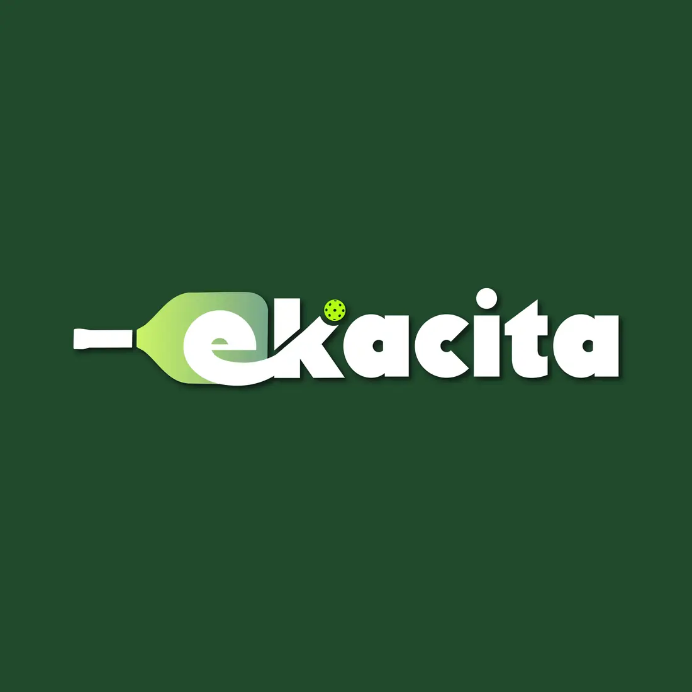

01 / 05
Logo & Branding
Logos, packaging and identities with personality, for small businesses, events and communities.
- Logos
- Packaging
- Event identity


Graphic Designer · Creative Designer
What I do
From logos to wall-sized murals, I make friendly visuals for brands, authors and schools.
Logos, packaging and identities with personality, for small businesses, events and communities.

Portraits, posters and book covers, drawn by hand and finished digitally.

Hand-painted walls for cafés, libraries and classrooms.

Wobler design for promotion farm fresh free keychain.

Visual Arts & Design lessons, student projects, exhibitions, productions and school events.

Selected works
Tap any piece to see it larger.
 Assalamualaikum
Assalamualaikum
A little about me
Behind every design is a story, and behind every creation is a passion for exploring possibilities.
I am a Graphic and Creative Designer who enjoys bringing ideas to life through art, technology, and meaningful learning experiences. I embrace challenges as opportunities to grow, learn, and discover my potential. I believe in pushing beyond my comfort zone, continuously improving myself, and turning ideas into reality.
My personal motto“Challenge Yourself Until You Succeed.”